GenAI, RAG & Agents
Comprendre comment intégrer les LLMs dans des applications concrètes — appeler des APIs de modèles, alimenter un LLM avec ses propres documents via RAG (Retrieval Augmented Generation), connecter des outils via le function calling, et orchestrer des agents autonomes avec LangChain.
- Cheatsheet — Gen AI, APIs, RAG & Agents
- ️ Récapitulatif — Erreurs clés à éviter
- 1) Pourquoi aller au-delà du chat ?
- 2) Training, Fine-tuning et Grounding
- 3) Utiliser les APIs de LLMs
- 4) Retrieval Augmented Generation (RAG)
- 5) Tool Calling (Function Calling)
- 6) Agents LLM
- 7) Évaluer les LLMs et les Agents
- 8) Model Compression
- 9) Limites et risques
- 📎 Annexe — PEFT en détail
- Bibliographie
- Challenges
📋 Cheatsheet — Gen AI, APIs, RAG & Agents
Appel API (Gemini)
from google import genai
import os
os.environ['GOOGLE_API_KEY'] = "your_api_key" # clé API Gemini
client = genai.Client() # instancie le client
## Appel simple
response = client.models.generate_content(
model="gemini-2.5-flash-lite", # modèle à utiliser
contents="Translate 'Hello' to French" # prompt utilisateur
)
response.text # → "Bonjour"
## Avec system prompt et paramètres de génération
response = client.models.generate_content(
model="gemini-2.5-flash-lite",
contents="Give instructions to cook samosas",
config=genai.types.GenerateContentConfig(
system_instruction="You are a sarcastic chef", # personnalité du modèle
max_output_tokens=200, # longueur max
temperature=1.2 # créativité
)
)Embedding de documents
## Convertir un texte en vecteur dense (embedding)
embedding = client.models.embed_content(
model="gemini-embedding-001",
contents=["This is a sentence to embed"]
)
len(embedding.embeddings[0].values) # dimension du vecteur (ex: 768)RAG — Pipeline complet avec LangChain
from langchain_community.document_loaders import PyPDFLoader
from langchain_chroma import Chroma
from langchain_google_genai import GoogleGenerativeAIEmbeddings
## 1. Charger le document
loader = PyPDFLoader("book.pdf")
data = loader.load() # liste de Documents (1 par page)
## 2. Créer les embeddings et stocker dans un Vector DB
embeddings = GoogleGenerativeAIEmbeddings(model="models/gemini-embedding-001")
vector_db = Chroma.from_documents(
documents=data, # chunks de texte
embedding=embeddings # modèle d'embedding
)
## 3. Recherche par similarité
query = "How does class inheritance work?"
docs = vector_db.similarity_search(query, k=5) # 5 documents les plus pertinents
## 4. Génération avec contexte
prompt = "\n\n".join(doc.page_content for doc in docs)
prompt += "\n\n" + query + " Answer based on the sources only."
response = client.models.generate_content(model="gemini-2.5-flash-lite", contents=prompt)Tool Calling (Function Calling)
## 1. Décrire la fonction pour le LLM
get_matches_declaration = {
"name": "get_matches",
"description": "Return football matches by country and year range",
"parameters": {
"type": "object",
"properties": {
"country": {"type": "string", "description": "Country name"},
"start_year": {"type": "number", "description": "Start year"},
"end_year": {"type": "number", "description": "End year"}
},
"required": ["country", "start_year", "end_year"]
}
}
## 2. Appeler le LLM avec l'outil
tools = genai.types.Tool(function_declarations=[get_matches_declaration])
response = client.models.generate_content(
model="gemini-2.5-flash-lite",
contents="Matches in Italy in the 80s and 90s",
config=genai.types.GenerateContentConfig(tools=[tools])
)
## 3. Extraire les arguments et appeler la fonction
args = response.candidates[0].content.parts[0].function_call.args
result = matches_finder(**args) # appel de la vraie fonction Python⚠️ Récapitulatif — Erreurs clés à éviter
Utiliser un embedding model différent pour les documents et la query
La similarité cosinus ne fonctionne que si les vecteurs sont dans le même espace. Mixer deux modèles d'embedding produit des résultats incohérents.
❌ Embedder les documents avec gemini-embedding-001 et la query avec text-embedding-ada-002
✅ Toujours utiliser le même modèle d'embedding pour les documents et les requêtes
Passer tout le document dans le prompt au lieu de faire du RAG
Les context windows sont limitées et coûteuses. 100 rapports annuels = 20M tokens → inabordable.
❌ prompt = entire_document + question sur un document de 500 pages
✅ Retriever les chunks pertinents via similarity search, puis ne passer que ceux-là dans le prompt
Confondre fine-tuning et RAG (grounding)
Le fine-tuning modifie les poids du modèle (coûteux, long). Le RAG injecte du contexte dans le prompt sans toucher au modèle.
❌ Fine-tuner un LLM pour lui apprendre le contenu d'un PDF mis à jour chaque semaine
✅ Utiliser RAG pour injecter le PDF à jour dans le prompt à chaque requête
Faire confiance aux arguments extraits par le tool calling sans validation
Le LLM peut halluciner des valeurs d'arguments qui ne correspondent à aucune donnée réelle.
❌ matches_finder(**args) directement sans vérifier que les valeurs sont valides
✅ Valider les arguments extraits (types, plages, existence dans la base) avant d'exécuter la fonction
Déployer un agent autonome sans garde-fous
Un agent peut boucler indéfiniment, appeler des outils de façon destructrice, ou générer des coûts API incontrôlés.
❌ Laisser un agent avec accès à une base de données en écriture sans limites
✅ Limiter le nombre d'itérations, les permissions des outils, et monitorer les coûts
1) Pourquoi aller au-delà du chat ?
Pour productionnaliser l'IA générative, il faut dépasser les interfaces de chat :
- APIs : exploiter la puissance des LLMs dans ses propres applications
- RAG : alimenter le modèle avec ses propres documents
- Agents : automatiser des tâches complexes via des LLMs qui utilisent des outils
LangChain 🦜🔗 est le framework open-source de référence pour construire des applications LLM — il fournit une interface commune pour les modèles, les outils, les vector stores et les agents.
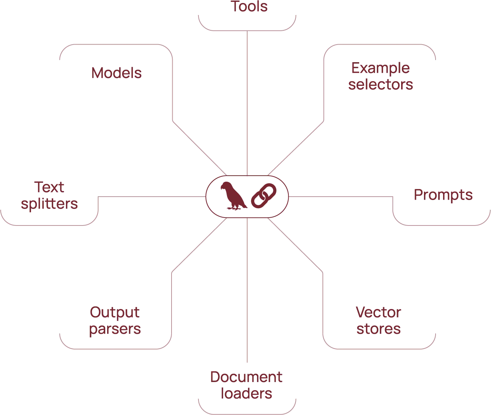
2) Training, Fine-tuning et Grounding
2.1 Les trois approches
| Approche | Principe | Coût | Quand l'utiliser |
|---|---|---|---|
| Training | Construire un modèle from scratch sur un corpus massif | Très élevé (millions $) | Nouveau domaine sans modèle existant |
| Fine-tuning | Ajuster un modèle pré-entraîné sur des données spécifiques | Moyen | Spécialiser le comportement du modèle |
| Grounding (RAG) | Connecter le modèle à des données externes via le prompt | Faible | Données qui changent, documents privés |
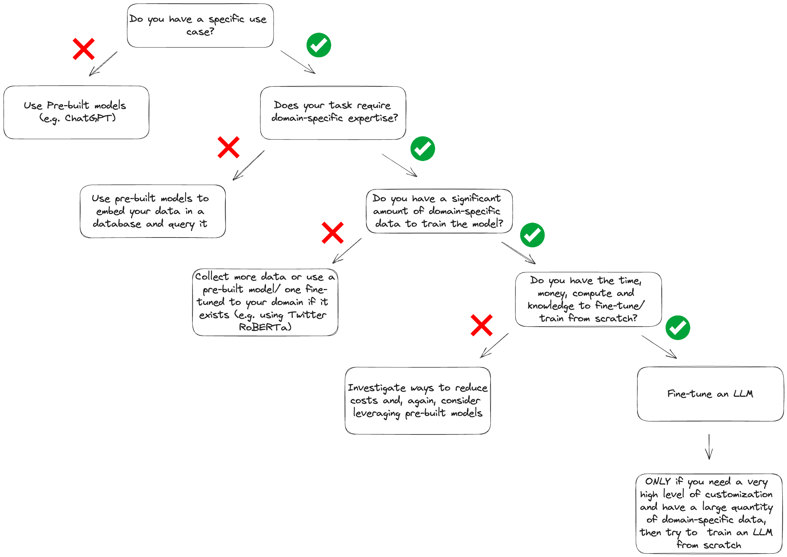
2.2 Techniques de fine-tuning
- Full fine-tuning : met à jour tous les poids — coûteux mais maximal
- PEFT (Parameter-Efficient Fine Tuning) : gèle les poids existants, ajoute et entraîne seulement quelques paramètres supplémentaires
- Adapters : couches ajoutées entre les blocs existants
- LoRA (Low-Rank Adaptation) : couches en parallèle, très peu de paramètres
- QLoRA : LoRA sur un modèle quantifié → encore moins de mémoire
- Instruction tuning : fine-tuner avec des paires instruction-réponse (ex: Flan-T5)
- RLHF (Reinforcement Learning from Human Feedback) : signaux de récompense humains (ex: InstructGPT → ChatGPT)
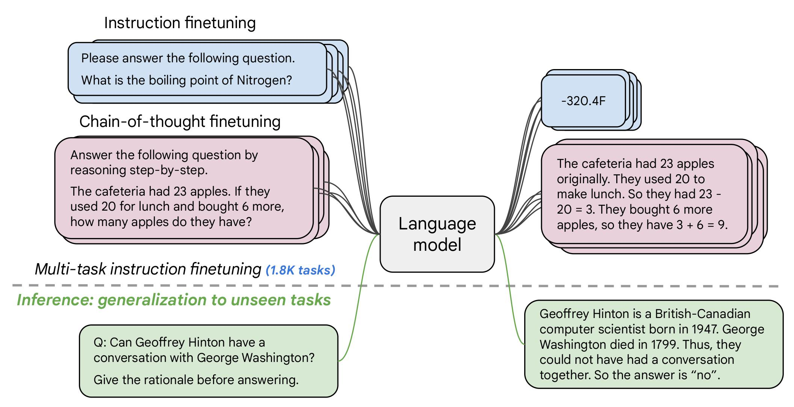
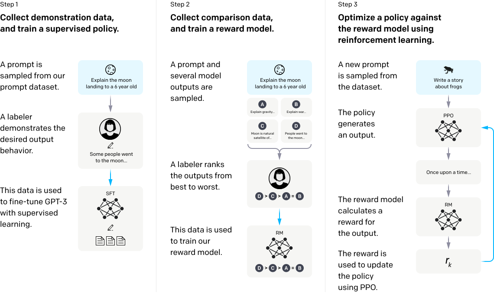
3) Utiliser les APIs de LLMs
3.1 Appel basique
from google import genai
client = genai.Client()
response = client.models.generate_content(
model="gemini-2.5-flash-lite",
contents="Translate 'Hello, how are you?' to French"
)
response.text # → "Bonjour, comment allez-vous ?"3.2 System prompt et paramètres
response = client.models.generate_content(
model="gemini-2.5-flash-lite",
contents="Give instructions to cook vegetable samosas",
config=genai.types.GenerateContentConfig(
system_instruction="You are a sassy culinary instructor",
max_output_tokens=200, # limite la longueur
temperature=1.2 # plus de créativité
)
)Chaque API de modèle (OpenAI, Anthropic, Google…) a sa propre syntaxe. LangChain fournit une interface commune pour passer facilement d'un modèle à un autre.
4) Retrieval Augmented Generation (RAG)
4.1 Pourquoi le RAG ?
Les LLMs ne connaissent que leurs données d'entraînement — ils n'ont pas accès à vos documents privés ni aux informations récentes. Re-entraîner est coûteux et lent.
Solution : récupérer les documents pertinents et les injecter dans le prompt.
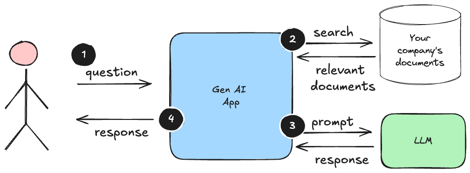
4.2 Document Embeddings
On convertit chaque document (ou chunk) en un vecteur dense via un modèle d'embedding, puis on stocke ces vecteurs dans un Vector Database (ex: Chroma, Pinecone, Weaviate).
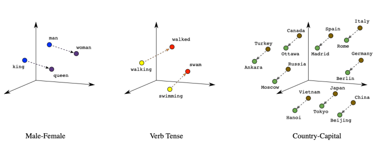
## Embedding d'un texte
embedding = client.models.embed_content(
model="gemini-embedding-001",
contents=["This is a sentence to embed"]
)4.3 Recherche par similarité
On embed la query avec le même modèle, puis on calcule la similarité cosinus entre la query et tous les documents pour trouver les plus pertinents.
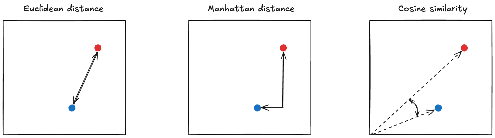
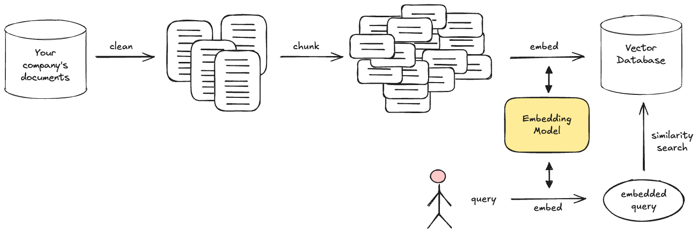
4.4 Pipeline RAG avec LangChain
from langchain_community.document_loaders import PyPDFLoader
from langchain_chroma import Chroma
from langchain_google_genai import GoogleGenerativeAIEmbeddings
## 1. Charger et chunker le document
loader = PyPDFLoader("book.pdf")
data = [d for d in loader.load() if d.page_content] # 1 Document par page
## 2. Stocker dans un Vector DB
embeddings = GoogleGenerativeAIEmbeddings(model="models/gemini-embedding-001")
vector_db = Chroma.from_documents(documents=data, embedding=embeddings)
## 3. Retrieval
query = "How does class inheritance work?"
docs = vector_db.similarity_search(query, k=5) # top 5 chunks
## 4. Generation
prompt = "\n\n".join(doc.page_content for doc in docs)
prompt += "\n\n" + query + " Answer based on the sources only."
response = client.models.generate_content(model="gemini-2.5-flash-lite", contents=prompt)Le chunking (découpage des documents) a un impact majeur sur la qualité du RAG. Un chunk = une page est simpliste — en production, on utilise des stratégies plus fines (taille fixe avec overlap, par paragraphe, récursif…).
5) Tool Calling (Function Calling)
Le tool calling permet au LLM d'extraire des arguments structurés depuis une requête en langage naturel, pour appeler une fonction Python.
## 1. Décrire la fonction au LLM (schéma JSON)
get_matches_declaration = {
"name": "get_matches",
"description": "Return football matches by country and year range",
"parameters": {
"type": "object",
"properties": {
"country": {"type": "string", "description": "Country name"},
"start_year": {"type": "number", "description": "Start year"},
"end_year": {"type": "number", "description": "End year"}
},
"required": ["country", "start_year", "end_year"]
}
}
## 2. Le LLM extrait les arguments
tools = genai.types.Tool(function_declarations=[get_matches_declaration])
response = client.models.generate_content(
model="gemini-2.5-flash-lite",
contents="Matches in Italy between 1980 and end of 20th century",
config=genai.types.GenerateContentConfig(tools=[tools])
)
## 3. Appeler la vraie fonction avec les arguments extraits
args = response.candidates[0].content.parts[0].function_call.args
result = matches_finder(**args) # → DataFrame filtréLe LLM ne exécute pas la fonction — il extrait les arguments. C'est votre code qui appelle la fonction réelle.
6) Agents LLM
6.1 Définition
Un agent utilise un LLM comme "cerveau" pour raisonner, planifier et exécuter des actions vers un objectif — en utilisant des outils et de la mémoire.
Boucle de base : Observer → Réfléchir → Agir → Répéter
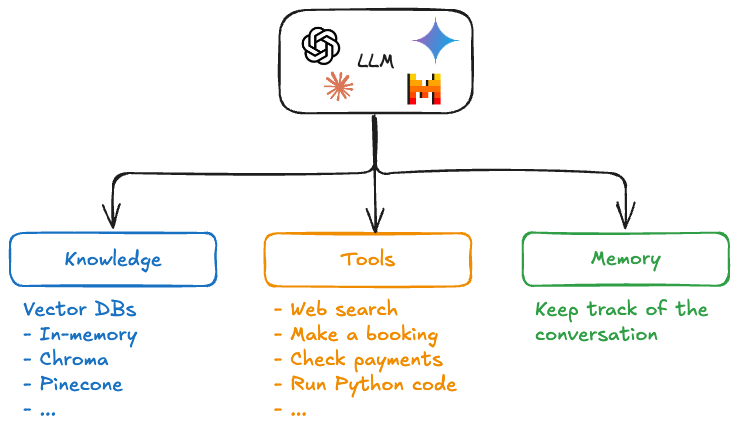
6.2 Composants
- LLM = cerveau (raisonnement, planification)
- Tools = mains (recherche web, base de données, API, code…)
- Memory = contexte persistant entre les étapes
6.3 Frameworks populaires
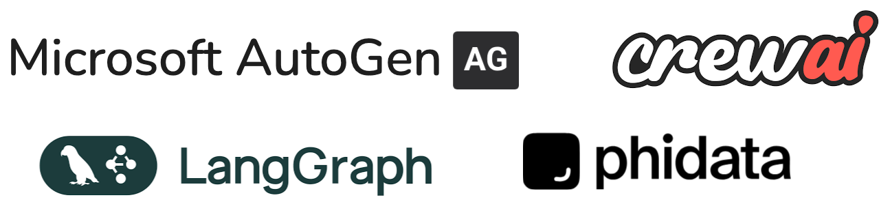
LangChain, LangGraph, CrewAI, AutoGen… fournissent des briques prêtes à l'emploi pour construire des agents.
6.4 Systèmes multi-agents
Plusieurs agents spécialisés collaborent pour résoudre un problème complexe :
- Research Agent → collecte l'information
- Summarizer Agent → condense
- Writer Agent → rédige le rapport final
7) Évaluer les LLMs et les Agents
7.1 Métriques selon la tâche
| Type de tâche | Métriques |
|---|---|
| Classification | Accuracy, Precision, Recall, F1 |
| Traduction / Résumé | BLEU (precision), ROUGE (recall) |
| Génération ouverte | Perplexité, évaluation humaine, LLM-as-a-judge |
| Agents | Goal completion rate, tool usage correctness, efficiency, robustness |
7.2 Benchmarks standards
| Capacité | Benchmarks |
|---|---|
| Compréhension générale | GLUE, SuperGLUE |
| Raisonnement multi-sujet | MMLU, ARC, Big-Bench |
| Factualité / Hallucination | TruthfulQA, FEVER, FactScore |
| Code | HumanEval, MBPP |
| Maths / Logique | GSM8K, MATH, LogiQA |
| Tool Use / Agents | ToolBench, AgentBench |
8) Model Compression
8.1 Quantization (poids plus petits)
Remplacer les poids 32-bit float par des formats plus compacts (16-bit, 8-bit, 4-bit) pour réduire la taille du modèle et accélérer l'inférence.
## Exemple : Llama Guard 3-1B en 4-bit = 460 Mo au lieu de ~4 Go
## Disponible sur HuggingFace : meta-llama/Llama-Guard-3-1B-INT4Règle de base : 1 paramètre en 32-bit = 4 octets. Un modèle de 8B paramètres = ~32 Go en FP32, ~16 Go en FP16, ~8 Go en INT8, ~4 Go en INT4.
8.2 Distillation (modèle plus petit)
Entraîner un petit modèle (student) à imiter les sorties d'un grand modèle (teacher) — le student apprend la distribution de probabilités du teacher, pas les labels bruts.
Exemple : DistilBERT = 40% plus petit, 60% plus rapide, 97% des performances de BERT.
👉 Documentation quantization — HuggingFace
9) Limites et risques
- Biais dans les données d'entraînement → réponses biaisées
- Hallucinations — le modèle invente des faits avec confiance
- Fiabilité — même avec tool calling, les résultats ne sont pas garantis
- Données obsolètes — le modèle ne connaît que ses données d'entraînement
- Pas d'intervalles de confiance — impossible de quantifier l'incertitude
📎 Annexe — PEFT en détail
Adapters
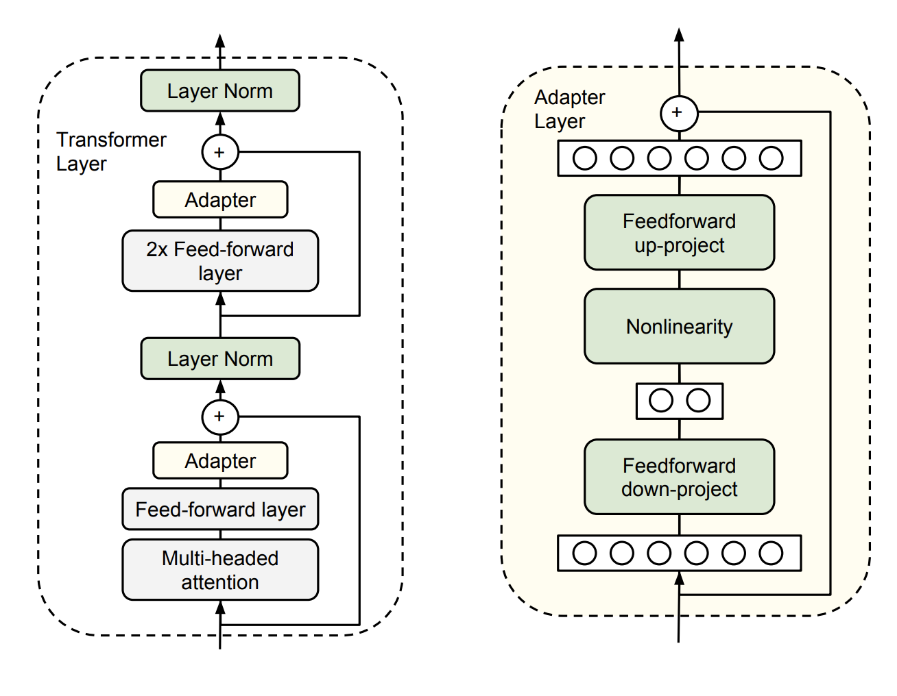
Au lieu d'entraîner 768 × 768 = 589 824 paramètres, on entraîne seulement 2 × 768 × 24 = 36 864 paramètres.
LoRA (Low-Rank Adaptation)
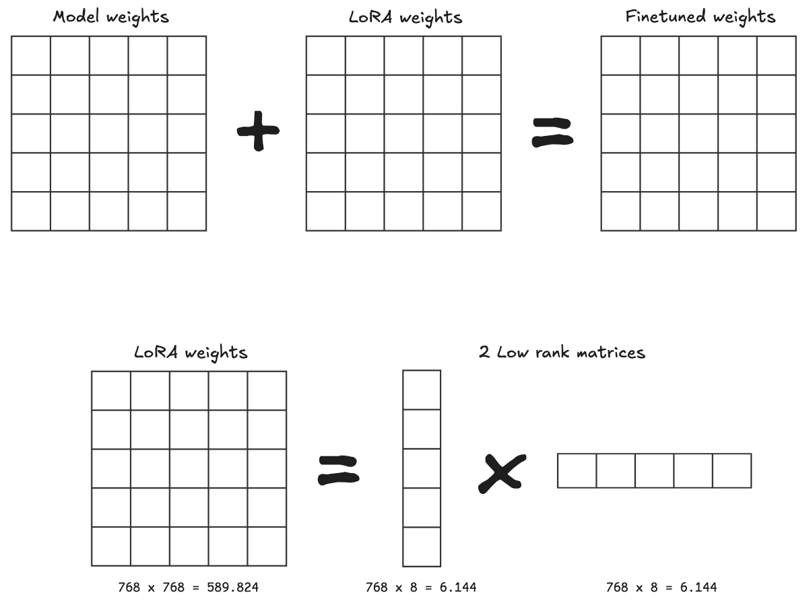
Au lieu de 589 824 paramètres, on entraîne 2 × 768 × 8 = 6 144 paramètres.
QLoRA
LoRA appliqué sur un modèle quantifié → encore moins de mémoire.
📚 Bibliographie
- 👉 OpenAI API Docs
- 👉 Andrew Ng — Prompt Engineering for Developers (gratuit, 1h)
- 👉 Deeplearning.ai — tous les cours courts
- 👉 LangChain Documentation
- 👉 Chroma Vector DB
- 👉 RSS Data Science Newsletter
🚀 Challenges
- Appeler l'API Gemini avec un system prompt et des paramètres de génération
- Construire un pipeline RAG complet avec LangChain : charger un PDF, créer un vector store, faire de la similarity search, et générer une réponse
- Implémenter du tool calling pour interroger un DataFrame en langage naturel
- 🧭 Introduction
- 1. Pourquoi aller au-delà du chat ?
- 2. Training, Fine-tuning et RAG — quand utiliser quoi ?
- 3. Appeler une API de LLM
- 4. RAG — Retrieval Augmented Generation
- 5. Tool Calling (Function Calling)
- 6. Agents LLM
- 7. Évaluer les LLMs et les agents
- 8. Compression de modèles
- 9. Limites et risques des LLMs
- 🎯 Questions de vérification
- 📌 TL;DR
🧭 Introduction
Jusqu'ici, un LLM (modèle de langage) c'est une boîte noire disponible sur ChatGPT ou Gemini : tu poses une question, tu reçois une réponse. Mais pour construire de vraies applications, il faut aller plus loin : appeler ces modèles depuis ton propre code, leur donner accès à tes documents, leur connecter des outils, et même leur confier des tâches autonomes.
Ce cours couvre exactement ça, en quatre grandes briques :
- Appeler l'API d'un LLM — parler à un modèle depuis Python
- RAG (Retrieval Augmented Generation) — donner de la documentation au modèle
- Tool Calling — permettre au modèle de déclencher des fonctions Python
- Agents — donner au modèle la capacité d'agir de façon autonome
5 points à retenir absolument
- Un LLM ne sait que ce qu'il a appris à l'entraînement — il ne connaît pas tes PDF ni tes données internes.
- Le RAG est la solution la moins chère pour lui donner du contexte : on cherche les bons morceaux, on les colle dans le prompt.
- Le tool calling ne fait pas tourner de code : le LLM extrait des arguments, c'est ton code qui exécute la fonction.
- Un agent, c'est un LLM en boucle : il observe, réfléchit, agit, et recommence jusqu'à atteindre l'objectif.
- Toujours utiliser le même modèle d'embedding pour les documents et pour les questions.
Analogie fil rouge — le LLM comme stagiaire
Imagine un stagiaire brillant mais qui arrive sans aucune connaissance de ton entreprise. Il est intelligent, sait raisonner, s'exprime très bien — mais il ne connaît pas tes clients, tes produits, tes données.
- RAG = lui donner un classeur de documentation où chercher avant de répondre.
- Tool calling = lui donner accès à des outils (téléphone, tableur, base de données) qu'il peut demander à utiliser.
- Agent = lui confier une mission entière et le laisser enchaîner les étapes seul.
Mini-plan
1. Pourquoi aller au-delà du chat ?
2. Training vs Fine-tuning vs RAG — quand utiliser quoi ?
3. Appeler une API de LLM
4. RAG — pipeline complet
5. Tool Calling
6. Agents
7. Évaluer les LLMs et les agents
8. Compression de modèles (quantization, distillation)
9. Limites et risques1. Pourquoi aller au-delà du chat ?
ChatGPT et consorts sont des interfaces grand public. Pour intégrer un LLM dans ton application (une API web, un script Python, un pipeline de données), tu dois passer par une API.
Trois raisons principales :
- APIs : exploiter la puissance d'un LLM dans ton propre code, avec tes propres données.
- RAG : alimenter le modèle avec des documents que tu contrôles (rapports internes, PDF, base de connaissance).
- Agents : automatiser des tâches complexes — le LLM prend des décisions et appelle des outils.
LangChain est le framework open-source de référence pour construire des applications LLM. Il fournit une interface commune pour les modèles, les vector stores, les outils et les agents — ce qui permet de changer de modèle (OpenAI, Gemini, Anthropic…) sans tout réécrire.
2. Training, Fine-tuning et RAG — quand utiliser quoi ?
Il existe trois façons d'adapter un LLM à tes besoins. Comprendre leurs différences est essentiel pour ne pas tomber dans des pièges coûteux.
Les trois approches
| Approche | Ce que ça fait | Coût | Quand l'utiliser |
|---|---|---|---|
| Training (from scratch) | Construire un modèle entier | Très élevé (millions €) | Presque jamais — réservé aux grands labos |
| Fine-tuning | Ajuster les poids d'un modèle existant sur tes données | Moyen | Changer le comportement/style du modèle |
| RAG (Grounding) | Injecter du contexte dans le prompt sans toucher au modèle | Faible | Données qui changent, documents privés |
Exemple concret : tu as un document PDF de politique RH mis à jour chaque trimestre.
- Mauvaise idée : le fine-tuner à chaque mise à jour (coûteux, lent).
- Bonne idée : RAG — à chaque question, tu cherches les bons extraits du PDF et tu les colles dans le prompt.
Fine-tuning ≠ RAG. Le fine-tuning modifie les poids du modèle de façon permanente. Le RAG injecte du contexte dans le prompt sans toucher au modèle. Pour des données qui changent régulièrement, le RAG est presque toujours le bon choix.
Les variantes du fine-tuning
Si tu dois quand même fine-tuner, voici les techniques du moins au plus coûteux :
- Full fine-tuning : met à jour tous les poids du modèle. Puissant, mais énorme consommation de mémoire GPU.
- PEFT (Parameter-Efficient Fine Tuning) : gèle la plupart des poids, n'entraîne que quelques paramètres supplémentaires.
- Adapters : on insère de petites couches entre les blocs existants du transformer.
- LoRA (Low-Rank Adaptation) : on ajoute de petites matrices en parallèle. Très peu de paramètres à entraîner.
- QLoRA : LoRA sur un modèle quantifié (poids compressés) — encore moins de mémoire requise.
- Instruction tuning : fine-tuner avec des paires (instruction, réponse) pour que le modèle suive mieux les consignes.
- RLHF (Reinforcement Learning from Human Feedback) : des humains notent les réponses, le modèle apprend de ces signaux — c'est ce qui a transformé GPT-3 en ChatGPT.
LoRA en deux mots : au lieu de mettre à jour une matrice de poids de taille 768×768 (589 824 paramètres), on entraîne deux petites matrices de taille 768×8 et 8×768 (soit seulement 12 288 paramètres). La mise à jour est reconstituée en multipliant ces deux petites matrices.
3. Appeler une API de LLM
Appel basique avec Gemini
Le principe est simple : tu crées un client, tu envoies un prompt, tu récupères une réponse texte.
from google import genai
import os
# On configure la clé API (à ne JAMAIS hardcoder dans le code — utiliser les variables d'env)
os.environ['GOOGLE_API_KEY'] = "ta_clé_api_ici"
# Instanciation du client Gemini
client = genai.Client()
# Appel basique : on envoie un prompt, on reçoit du texte
response = client.models.generate_content(
model="gemini-2.5-flash-lite", # modèle à utiliser
contents="Translate 'Hello' to French" # le prompt utilisateur
)
print(response.text) # → "Bonjour"Ce qui se passe : ton code envoie une requête HTTP à l'API Gemini, qui fait tourner le modèle dans le cloud et te renvoie une réponse JSON. Tu n'as rien à héberger localement.
Ajouter un system prompt et des paramètres
Le system prompt permet de définir le comportement général du modèle (son "rôle"). Les paramètres contrôlent la génération.
response = client.models.generate_content(
model="gemini-2.5-flash-lite",
contents="Give instructions to cook vegetable samosas", # message utilisateur
config=genai.types.GenerateContentConfig(
system_instruction="You are a sassy culinary instructor", # personnalité du modèle
max_output_tokens=200, # longueur maximale de la réponse
temperature=1.2 # créativité : 0 = déterministe, 2 = très créatif
)
)temperature : c'est le paramètre le plus important à comprendre.
temperature=0: le modèle choisit toujours le mot le plus probable (réponses prévisibles, factuellesç).temperature=1.2: il prend des risques, explore des formulations moins probables (réponses plus créatives mais moins fiables).
Chaque fournisseur de LLM (OpenAI, Anthropic, Google…) a sa propre syntaxe d'API. LangChain unifie tout ça derrière une interface commune, ce qui permet de changer de modèle en changeant juste une ligne de code.
4. RAG — Retrieval Augmented Generation
Le problème que RAG résout
Un LLM ne connaît que ce qu'il a vu pendant son entraînement. Il ne sait pas :
- ce qu'il y a dans tes PDF internes,
- ce qui s'est passé après sa date de coupure,
- les données propres à ton entreprise.
La solution naive serait de coller tout le document dans le prompt. Mais un rapport annuel fait 200 pages : tu ne peux pas tout envoyer à chaque requête (trop cher, trop lent, souvent impossible).
La solution RAG : avant d'appeler le LLM, tu cherches les morceaux pertinents dans ta base documentaire, et tu n'injectes que ceux-là dans le prompt.
Question de l'utilisateur
↓
[Recherche dans la base vectorielle]
↓
Top 5 extraits pertinents
↓
LLM répond en se basant sur ces extraitsÉtape 1 — Les embeddings : transformer le texte en vecteurs
Un embedding, c'est la représentation d'un texte sous forme de liste de nombres (un vecteur). Des textes avec un sens proche auront des vecteurs proches dans l'espace mathématique.
Exemple concret : "chien", "chiot", "labrador" auront des vecteurs proches. "chien" et "voiture" seront éloignés.
# On transforme une phrase en vecteur dense
embedding = client.models.embed_content(
model="gemini-embedding-001", # modèle d'embedding
contents=["This is a sentence to embed"] # texte à vectoriser
)
# Le résultat est une liste de nombres (ex: 768 valeurs)
print(len(embedding.embeddings[0].values)) # → 768Étape 2 — La recherche par similarité
Pour trouver les extraits pertinents par rapport à une question, on :
- Transforme la question en vecteur (avec le même modèle d'embedding).
- Calcule la similarité cosinus entre ce vecteur et tous les vecteurs des documents.
- Retourne les K documents les plus proches.
Règle absolue : utiliser toujours le même modèle d'embedding pour les documents ET pour les questions. Si tu indexes avec gemini-embedding-001 et que tu cherches avec text-embedding-ada-002, les vecteurs ne sont pas dans le même espace — les résultats seront du bruit.
Étape 3 — La Vector Database
Une Vector Database (base de données vectorielle) est une base spécialisée dans le stockage et la recherche de vecteurs. Elle optimise la recherche par similarité sur des millions de vecteurs.
Exemples : Chroma (local, facile à démarrer), Pinecone, Weaviate, FAISS.
Pipeline RAG complet avec LangChain
from langchain_community.document_loaders import PyPDFLoader
from langchain_chroma import Chroma
from langchain_google_genai import GoogleGenerativeAIEmbeddings
# --- PHASE D'INDEXATION (fait une seule fois) ---
# 1. Charger le PDF : LangChain découpe le document en pages (1 Document par page)
loader = PyPDFLoader("book.pdf")
data = [d for d in loader.load() if d.page_content] # filtre les pages vides
# 2. Créer le modèle d'embedding
embeddings = GoogleGenerativeAIEmbeddings(model="models/gemini-embedding-001")
# 3. Vectoriser les pages et les stocker dans Chroma (Vector DB locale)
vector_db = Chroma.from_documents(
documents=data, # liste des pages du PDF
embedding=embeddings # modèle qui va créer les vecteurs
)
# --- PHASE DE REQUÊTE (à chaque question utilisateur) ---
# 4. L'utilisateur pose une question
query = "How does class inheritance work?"
# 5. Rechercher les 5 pages les plus pertinentes par similarité cosinus
docs = vector_db.similarity_search(query, k=5) # k = nombre de résultats
# 6. Construire le prompt en collant les extraits pertinents + la question
context = "\n\n".join(doc.page_content for doc in docs) # assemble les extraits
prompt = context + "\n\n" + query + " Answer based on the sources only."
# 7. Envoyer au LLM qui répond en se basant uniquement sur ces extraits
response = client.models.generate_content(
model="gemini-2.5-flash-lite",
contents=prompt
)
print(response.text)Récap du pipeline : charger le PDF → vectoriser chaque page → stocker dans Chroma → à chaque question, chercher les pages pertinentes → coller dans le prompt → LLM répond.
Le chunking, c'est critique. Dans l'exemple ci-dessus, un "chunk" = une page. C'est un découpage très simple. En production, on utilise des stratégies plus fines : taille fixe avec overlap (pour ne pas couper une idée en plein milieu), découpage par paragraphe, par section, etc. Un mauvais découpage dégrade fortement la qualité du RAG.
Pourquoi la similarité cosinus et pas la distance euclidienne ? La distance euclidienne mesure l'écart absolu entre deux points. La similarité cosinus mesure l'angle entre deux vecteurs — elle est insensible à la norme (longueur) du vecteur. Pour du texte, deux phrases de longueurs très différentes mais de même sens auront un angle proche de 0, donc une similarité cosinus proche de 1. C'est pourquoi c'est la métrique standard en NLP.
5. Tool Calling (Function Calling)
Le principe
Jusqu'ici, on donne un texte au LLM et il répond du texte. Avec le tool calling, on lui dit : "Si tu as besoin d'une information, tu peux demander à appeler ces fonctions Python."
Le LLM ne fait PAS tourner le code. Il analyse la question, extrait des arguments structurés, et renvoie un JSON. C'est ton code qui appelle la vraie fonction.
Exemple concret : l'utilisateur écrit "Donne-moi les matchs de foot en Italie dans les années 80 et 90". Au lieu de répondre de mémoire (avec risque d'hallucination), le LLM comprend qu'il doit appeler une fonction get_matches(country="Italy", start_year=1980, end_year=1999) et renvoie ces arguments structurés.
# 1. Décrire la fonction au LLM via un schéma JSON
# (comme une documentation que le LLM va lire)
get_matches_declaration = {
"name": "get_matches",
"description": "Return football matches by country and year range", # explication en anglais pour le LLM
"parameters": {
"type": "object",
"properties": {
"country": {"type": "string", "description": "Country name"},
"start_year": {"type": "number", "description": "Start year"},
"end_year": {"type": "number", "description": "End year"}
},
"required": ["country", "start_year", "end_year"] # arguments obligatoires
}
}
# 2. Créer l'objet Tool et l'envoyer au LLM avec la question
tools = genai.types.Tool(function_declarations=[get_matches_declaration])
response = client.models.generate_content(
model="gemini-2.5-flash-lite",
contents="Matches in Italy between 1980 and end of 20th century", # question en langage naturel
config=genai.types.GenerateContentConfig(tools=[tools]) # on passe les outils disponibles
)
# 3. Le LLM n'a PAS répondu en texte — il a extrait des arguments structurés
# On les récupère depuis la réponse
args = response.candidates[0].content.parts[0].function_call.args
# args = {"country": "Italy", "start_year": 1980, "end_year": 1999}
# 4. On appelle la vraie fonction Python avec ces arguments
result = matches_finder(**args) # → retourne un DataFrame filtréRécap : question en langage naturel → LLM extrait des arguments JSON → ton code appelle la fonction → tu fais ce que tu veux du résultat (le repasser au LLM, l'afficher, etc.).
Le LLM ne "voit" jamais ta fonction Python. Il reçoit juste la description en JSON, comme un humain lirait une documentation d'API. C'est ton code qui fait le pont entre le JSON retourné par le LLM et l'appel Python réel.
Valide toujours les arguments avant d'exécuter. Le LLM peut halluciner des valeurs (par exemple start_year=1985.5 ou un pays mal orthographié). Avant d'appeler ta fonction, vérifie que les types sont corrects et que les valeurs sont dans des plages attendues.
6. Agents LLM
Définition
Un agent LLM, c'est un programme qui utilise un LLM comme "cerveau" pour accomplir une tâche complexe de façon autonome. Il ne se contente pas de répondre à une question — il planifie, agit, observe les résultats, et ajuste sa stratégie.
Boucle de base d'un agent (pattern ReAct : Reason + Act) :
1. Observer la situation (ce qu'on lui demande, les résultats précédents)
2. Réfléchir (le LLM raisonne sur la prochaine étape)
3. Agir (appeler un outil : recherche web, base de données, code…)
4. Retour à l'étape 1 jusqu'à l'objectif atteintExemple concret : "Trouve les 3 startups françaises de l'IA les plus levées en 2024 et génère un rapport".
- Étape 1 : recherche web "startups IA France 2024 levées de fonds"
- Étape 2 : lit les résultats, identifie les 3 startups
- Étape 3 : recherche des infos complémentaires sur chacune
- Étape 4 : rédige le rapport final
Les trois composants d'un agent
+-----------------------+
| AGENT |
| |
| LLM (cerveau) | ← raisonne, planifie, décide
| Tools (mains) | ← recherche web, BDD, API, exécution de code
| Memory (mémoire) | ← conserve le contexte entre les étapes
+-----------------------+- LLM : le moteur de raisonnement. Il décide quelle action entreprendre.
- Tools : les fonctions que l'agent peut appeler (search, calculer, lire un fichier, écrire en base…).
- Memory : l'historique de conversation et les résultats intermédiaires.
Frameworks pour construire des agents
LangChain, LangGraph, CrewAI, AutoGen… fournissent des briques prêtes à l'emploi. LangChain reste le plus utilisé et documenté.
Systèmes multi-agents
Pour des tâches très complexes, on fait collaborer plusieurs agents spécialisés :
Exemple : pipeline de veille concurrentielle
[Research Agent] → collecte des infos sur le web
↓
[Analyst Agent] → synthétise et identifie les tendances
↓
[Writer Agent] → rédige le rapport final structuréChaque agent a son propre LLM, ses propres outils, et sa propre spécialité. Un agent "orchestrateur" coordonne l'ensemble.
Ne pas déployer un agent sans garde-fous. Un agent peut boucler indéfiniment (et générer des coûts API incontrôlés), appeler des outils de façon destructrice (écrire en base de données sans validation), ou se coincer dans une boucle d'erreurs. Toujours limiter : le nombre max d'itérations, les permissions des outils, et monitorer les coûts en temps réel.
Bonnes pratiques pour les agents :
- Limiter le nombre d'itérations (max_iterations=10)
- Donner des outils en lecture seule si l'écriture n'est pas nécessaire
- Logger chaque action de l'agent pour le debug
- Tester avec des tâches simples avant de déployer en production
7. Évaluer les LLMs et les agents
Métriques selon la tâche
| Type de tâche | Métriques classiques |
|---|---|
| Classification | Accuracy, Precision, Recall, F1 |
| Traduction / Résumé | BLEU (mesure la précision), ROUGE (mesure le rappel) |
| Génération ouverte | Perplexité, évaluation humaine, LLM-as-a-judge |
| Agents | Taux de complétion de l'objectif, bonne utilisation des outils, efficacité, robustesse |
LLM-as-a-judge : utiliser un LLM (ex: GPT-4) pour évaluer les réponses d'un autre LLM. C'est devenu une pratique courante car l'évaluation humaine est coûteuse et lente.
Benchmarks standards
| Capacité évaluée | Benchmarks connus |
|---|---|
| Compréhension générale du langage | GLUE, SuperGLUE |
| Raisonnement multi-domaine | MMLU, ARC, Big-Bench |
| Factualité / Hallucinations | TruthfulQA, FEVER, FactScore |
| Code | HumanEval, MBPP |
| Maths / Logique | GSM8K, MATH, LogiQA |
| Utilisation d'outils / Agents | ToolBench, AgentBench |
BLEU vs ROUGE : BLEU (Bilingual Evaluation Understudy) compare les n-grammes de la réponse générée à la référence — c'est une mesure de précision (est-ce que ce que j'ai produit est correct ?). ROUGE fait l'inverse — c'est une mesure de rappel (est-ce que j'ai couvert tout ce qu'il fallait ?). Pour le résumé automatique, ROUGE-L est le plus couramment utilisé.
8. Compression de modèles
Les grands modèles (70B, 405B paramètres) sont difficiles à faire tourner localement. Deux techniques permettent de les compresser.
Quantization — des poids plus légers
On remplace les poids flottants 32-bit par des formats plus petits : 16-bit, 8-bit, voire 4-bit.
# Règle de calcul :
# 1 paramètre en FP32 = 4 octets
# Un modèle de 8 milliards de paramètres :
# - FP32 → 8B × 4 octets = ~32 Go de VRAM
# - FP16 → 8B × 2 octets = ~16 Go
# - INT8 → 8B × 1 octet = ~8 Go
# - INT4 → 8B × 0.5 oct = ~4 Go
# Exemple concret : Llama Guard 3-1B en 4-bit = 460 Mo au lieu de ~4 Go
# Disponible sur HuggingFace : meta-llama/Llama-Guard-3-1B-INT4La perte de précision est souvent faible en pratique : un modèle INT4 conserve ~95% des performances d'un modèle FP32 pour la plupart des tâches.
Distillation — un modèle plus petit qui imite le grand
On entraîne un petit modèle (student) à reproduire les sorties d'un grand modèle (teacher). Le student n'apprend pas les labels bruts — il apprend la distribution de probabilités du teacher, ce qui lui permet de capturer les nuances du raisonnement.
Exemple emblématique : DistilBERT = 40% plus petit que BERT, 60% plus rapide à l'inférence, mais conserve 97% des performances sur les benchmarks standards.
Quantization vs Distillation : la quantization compresse un modèle existant en réduisant la précision des poids. La distillation crée un nouveau modèle plus petit qui imite le comportement du grand. Les deux sont complémentaires — QLoRA, par exemple, combine fine-tuning LoRA et quantization.
9. Limites et risques des LLMs
Avant de déployer un LLM en production, il faut avoir conscience de ses limitations :
- Hallucinations : le modèle invente des faits avec une confiance totale. Il peut citer des sources qui n'existent pas, donner des chiffres faux, ou attribuer des propos à des personnes qui ne les ont pas tenus.
- Biais : les données d'entraînement reflètent les biais humains — les réponses peuvent être biaisées sur le genre, l'origine, la culture, etc.
- Données obsolètes : le modèle ne sait pas ce qui s'est passé après sa date de coupure (cut-off date).
- Pas de confiance calibrée : contrairement à un modèle statistique classique, un LLM ne peut pas dire "je suis sûr à 73%". Il répond avec la même assurance qu'il soit sûr ou en train d'halluciner.
- Fiabilité du tool calling : même avec des outils, les arguments extraits peuvent être erronés — toujours valider avant d'exécuter.
Pour limiter les hallucinations en RAG : demande explicitement au LLM de répondre uniquement à partir des sources fournies, et de dire "je ne sais pas" si l'information n'est pas dans le contexte. Ajouter "Answer based on the sources only. If the answer is not in the sources, say so." à ton prompt fait une vraie différence.
🎯 Questions de vérification
1. Quelle est la différence fondamentale entre RAG et fine-tuning ?
Le fine-tuning modifie les poids du modèle de façon permanente (coûteux, long, à refaire si les données changent). Le RAG injecte du contexte dans le prompt sans modifier le modèle (rapide, peu coûteux, facilement mis à jour).
2. Pourquoi faut-il absolument utiliser le même modèle d'embedding pour les documents et pour les questions dans un système RAG ?
Les embeddings créés par différents modèles vivent dans des espaces vectoriels différents. Comparer un vecteur de gemini-embedding-001 avec un vecteur de text-embedding-ada-002, c'est comme comparer des coordonnées GPS avec des coordonnées en Lambert — les distances calculées n'ont aucun sens.
3. Lors d'un tool calling, qui exécute réellement la fonction Python ?
Ton code Python, pas le LLM. Le LLM extrait les arguments et les renvoie en JSON structuré. C'est toi qui appelles la fonction avec ces arguments et qui décides quoi faire du résultat.
4. Qu'est-ce qui distingue un agent LLM d'un simple appel API avec tool calling ?
Un agent fonctionne en boucle autonome : il observe, réfléchit, agit, puis recommence jusqu'à atteindre l'objectif. Il peut enchaîner plusieurs appels d'outils, gérer de la mémoire entre les étapes, et adapter sa stratégie en cours de route. Un simple tool calling est une interaction unique (une question → un appel de fonction → une réponse).
📌 TL;DR
- RAG = chercher les bons extraits dans tes documents, les coller dans le prompt, laisser le LLM répondre — c'est la façon la moins coûteuse de donner de la "mémoire documentaire" à un modèle.
- Embeddings = représentation numérique du sens d'un texte — des textes proches sémantiquement ont des vecteurs proches.
- Vector DB (ex: Chroma) = base de données spécialisée pour stocker et chercher des vecteurs par similarité cosinus.
- Tool calling = le LLM extrait des arguments structurés depuis le langage naturel, ton code exécute la vraie fonction — le LLM ne fait jamais tourner du code directement.
- Agent = LLM en boucle autonome (Observer → Réfléchir → Agir) qui peut enchaîner plusieurs outils pour accomplir une tâche complexe.
- Fine-tuning modifie les poids du modèle (coûteux) ; RAG injecte du contexte dans le prompt (léger) — pour des données qui changent, RAG est presque toujours le bon choix.
- Quantization réduit la taille mémoire d'un modèle (FP32 → INT4 = 8x moins de VRAM) ; Distillation crée un modèle plus petit qui imite un grand.
- Un LLM hallucine, est biaisé, et n'a pas accès aux données après sa date de coupure — à ne jamais oublier en production.
- Toujours valider les arguments extraits par le tool calling avant de les exécuter.
- Toujours limiter les agents (max itérations, permissions, monitoring des coûts) avant de les déployer.
A. Concepts du cours
Travailler avec les APIs LLM
Les APIs des grands fournisseurs (OpenAI, Anthropic, Google, Mistral) suivent un format convergent, basé sur des messages structurés en rôles. Comprendre ce format est la première étape pour construire n'importe quelle application LLM.
from anthropic import Anthropic
client = Anthropic() # lit ANTHROPIC_API_KEY dans l'env
response = client.messages.create(
model="claude-3-5-sonnet-20241022", # identifiant de modèle
max_tokens=1024, # longueur max de la réponse
messages=[
{"role": "user", "content": "Qu'est-ce qu'un LLM en 3 phrases ?"},
],
system="Tu es un professeur d'informatique.", # persona persistant
)
print(response.content[0].text) # la réponse textuelleQuatre rôles principaux dans la plupart des APIs :
system: instructions persistantes pour toute la conversation (persona, contraintes, format attendu)user: messages de l'utilisateur humainassistant: réponses du modèle (vous les fournissez pour reconstruire l'historique conversationnel)tool: résultats d'exécution de fonctions (pour les agents)
Hyperparamètres clés à connaître :
| Paramètre | Effet |
|---|---|
temperature (0-2) | 0 = déterministe et factuel, 1 = créatif, 2 = chaotique |
top_p | Échantillonnage nucleus, alternative à temperature |
max_tokens | Longueur maximale de la réponse générée |
stop | Séquences qui arrêtent la génération |
Analogie : temperature=0 est un fonctionnaire qui répond toujours la même chose à la même question. temperature=1 est un écrivain qui propose une version différente à chaque fois. temperature=2 est un poète sous psychotropes. Pour de l'extraction structurée (JSON, classification, parsing), utilisez 0. Pour de la création de contenu, 0,7 à 1. Pour du brainstorming, 1 à 1,3.
Prompt engineering
Cinq techniques essentielles à maîtriser pour obtenir de bons résultats sans toucher au modèle.
1. Soyez spécifique sur la sortie attendue. Un prompt vague donne une réponse vague. Un prompt précis donne une réponse exploitable.
❌ "Résume cet article."
✓ "Résume cet article en exactement 3 bullet points,
chacun de moins de 20 mots, en français,
en commençant par un verbe à l'infinitif."2. Few-shot prompting : montrer des exemples du comportement voulu. C'est l'une des techniques les plus puissantes en prompt engineering, et souvent la plus sous-utilisée.
Classifie le sentiment :
Texte: "Ce film est génial !" → POSITIF
Texte: "Quelle perte de temps." → NÉGATIF
Texte: "Bof, sans plus." → NEUTRE
Texte: "J'ai adoré l'histoire et les personnages." →3. Chain-of-Thought : demander un raisonnement étape par étape avant la réponse finale. Sur des problèmes de raisonnement (maths, logique, diagnostic), le CoT améliore la précision de 20 à 50%.
"Résous ce problème en réfléchissant étape par étape,
puis donne ta réponse finale dans un format <answer>...</answer>."4. Structure XML : utiliser des tags pour organiser des blocs longs. Claude est particulièrement réceptif au formatage XML, et c'est aussi plus simple à parser côté code.
<context>
{document long}
</context>
<question>
Quels sont les 3 points clés de ce document ?
</question>5. Réflexion explicite : "avant de répondre, pense à ce qui pourrait mal se passer et vérifie ton raisonnement". Effet notable sur les hallucinations.
Bonne pratique : avant de coder un agent compliqué, passez 20 minutes à itérer sur votre prompt. Souvent, un bon prompt élimine 80% des problèmes que vous auriez résolus avec du code post-processing. Le prompt est du code, traitez-le avec la même rigueur.
Le pattern RAG
Retrieval-Augmented Generation : ajouter des connaissances externes à un LLM au moment de la requête, sans modifier le modèle. C'est le pattern dominant pour construire des chatbots sur des données privées (docs internes, contrats, base de connaissance).
Pipeline canonique en deux phases :
1. Indexation (offline, une fois par batch)
├─ Découper les documents en chunks de ~500 tokens avec overlap
├─ Générer des embeddings de chaque chunk avec un sentence-transformer
└─ Stocker les vecteurs + payload dans une vector DB
2. Requête (runtime, à chaque question)
├─ Encoder la question en embedding (même modèle qu'à l'indexation !)
├─ Chercher les top-k chunks les plus similaires (cosine similarity)
├─ Construire un prompt incluant ces chunks comme contexte
└─ Appeler le LLM avec ce prompt enrichiDétail des étapes clés :
- Chunking : les documents sont trop longs pour être passés tels quels à un LLM et trop longs pour être bien retrouvés (un embedding d'un document de 50 pages est un "moyenne diluée" peu discriminante). On les découpe en chunks de ~500-1000 tokens avec 10% d'overlap pour éviter de couper au milieu d'une phrase importante.
- Embeddings : chaque chunk est transformé en un vecteur dense (384 à 1536 dimensions selon le modèle). Deux chunks sémantiquement proches ont des vecteurs proches (au sens cosinus).
- Vector DB : stocke les vecteurs avec une structure indexée (HNSW, IVF) qui permet une recherche top-k en quelques millisecondes même sur des millions de documents.
- Retrieval : pour une question, on calcule son embedding et on cherche les $k$ chunks les plus similaires (typiquement $k=3$ à $10$).
- Generation : on passe les chunks trouvés comme contexte au LLM avec un prompt qui l'instruit à répondre uniquement à partir de ce contexte.
from sentence_transformers import SentenceTransformer
import faiss
import numpy as np
# 1. Indexation
embedder = SentenceTransformer("all-MiniLM-L6-v2") # sortie : vecteurs de dim 384
chunks = [
"Notre politique de remboursement permet 30 jours...",
"Les frais de port sont gratuits au-dessus de 50€...",
# ... des milliers d'autres chunks
]
embeddings = embedder.encode(chunks) # shape (n, 384)
dim = embeddings.shape[1]
index = faiss.IndexFlatL2(dim) # index exact (pour petit corpus)
index.add(embeddings.astype("float32"))
# 2. Requête
def rag_query(question):
q_emb = embedder.encode([question]).astype("float32")
distances, indices = index.search(q_emb, k=3) # top-3 chunks similaires
relevant = [chunks[i] for i in indices[0]]
context = "\n---\n".join(relevant)
prompt = f"""Contexte:
{context}
Question: {question}
Réponds uniquement à partir du contexte ci-dessus.
Si l'information n'y est pas, réponds "Je ne sais pas"."""
return llm.generate(prompt)Avantages du RAG par rapport au fine-tuning :
- Connaissances toujours à jour : on met à jour l'index, pas le modèle
- Traçabilité : on sait exactement quels documents ont été utilisés, on peut les afficher à l'utilisateur
- Pas de fine-tuning nécessaire → pas de GPU → pas de cycle d'entraînement
- Économique : un petit LLM + RAG bat souvent un gros LLM sans contexte
Analogie : un LLM seul est un consultant expert mais qui n'a pas accès à votre intranet d'entreprise. Le RAG, c'est lui donner un assistant qui cherche les bons documents avant chaque question. Le consultant garde son expertise générale, mais répond avec vos données spécifiques.
Agents et tool use
Un agent est un LLM qui peut prendre des actions dans le monde via des outils (fonctions). C'est ce qui transforme un chatbot passif en assistant actif capable de réellement accomplir des tâches.
Le pattern agent loop fondamental :
- L'utilisateur pose une question
- Le LLM décide d'appeler un outil et génère les arguments (en JSON)
- Le code orchestrateur exécute l'outil et renvoie le résultat au LLM
- Le LLM intègre le résultat et soit répond à l'utilisateur, soit appelle un autre outil
- On répète jusqu'à ce que le LLM réponde sans demander d'outil
user query → LLM → tool_call → exec(tool) → result → LLM → tool_call → ... → final answerfrom anthropic import Anthropic
client = Anthropic()
# Déclaration des outils disponibles avec un schéma JSON
tools = [{
"name": "get_weather",
"description": "Get current weather for a city",
"input_schema": {
"type": "object",
"properties": {
"city": {"type": "string", "description": "Name of the city"},
},
"required": ["city"],
},
}]
response = client.messages.create(
model="claude-3-5-sonnet-20241022",
max_tokens=1024,
tools=tools,
messages=[{"role": "user", "content": "What's the weather in Paris?"}],
)
# response.content contient soit du texte, soit un bloc tool_use avec les arguments
# À vous d'exécuter la fonction réelle et de réinjecter le résultat comme message "tool"Outils typiques pour un agent :
web_search(query): recherche webread_file(path)/write_file(path, content): système de fichiersrun_code(code): exécution Python sandboxéequery_database(sql): requêtes SQL en lecturesend_email(to, subject, body): envoi de mails (attention aux risques)
Sécurité : un agent qui peut exécuter du code ou envoyer des emails peut faire des dégâts massifs. Toujours : (1) sandboxer l'exécution de code (Docker, gVisor, restricted environment), (2) demander confirmation utilisateur pour les actions destructrices ou externes, (3) limiter le nombre d'itérations (sinon l'agent peut boucler à l'infini). Jamais donner à un agent l'accès à des ressources qui ne devraient pas être modifiables par lui.
B. Compléments avancés
Vector databases
Pour stocker des millions d'embeddings et effectuer de la recherche par similarité ultra-rapide en production.
| Solution | Type | Quand l'utiliser |
|---|---|---|
| FAISS | Lib en mémoire | Local, prototypes, datasets < 10M |
| Chroma | DB embarquée | Petits projets, simple à démarrer |
| Qdrant | DB self-hosted ou cloud | Production, filtrage avancé par metadata |
| Pinecone | DB managée cloud | Production sans ops, payant |
| Weaviate | DB self-hosted ou cloud | Avec relations entre objets |
| pgvector | Extension Postgres | Si vous avez déjà Postgres |
import qdrant_client
from qdrant_client.models import Distance, VectorParams, PointStruct
client = qdrant_client.QdrantClient("localhost", port=6333)
client.create_collection(
collection_name="docs",
vectors_config=VectorParams(size=384, distance=Distance.COSINE), # cosine similarity
)
# Insertion : on stocke vecteur + payload (texte original, metadata)
client.upsert(
collection_name="docs",
points=[
PointStruct(id=i, vector=emb.tolist(), payload={"text": chunks[i]})
for i, emb in enumerate(embeddings)
],
)
# Recherche : on envoie un vecteur, on reçoit les plus proches
results = client.search(
collection_name="docs",
query_vector=q_emb.tolist(),
limit=5,
)Function calling structuré
Les LLMs modernes (GPT-4, Claude, Gemini) peuvent générer du JSON valide directement, sans parsing post-hoc fragile à base de regex. C'est le mode standard pour intégrer un LLM dans un pipeline applicatif.
response = client.messages.create(
model="claude-3-5-sonnet-20241022",
max_tokens=1024,
messages=[{
"role": "user",
"content": "Extract: 'Alice (30) lives in Paris with her cat Felix (5)'"
}],
tools=[{
"name": "extract_person",
"description": "Extract structured person info",
"input_schema": {
"type": "object",
"properties": {
"name": {"type": "string"},
"age": {"type": "integer"},
"city": {"type": "string"},
"pets": {
"type": "array",
"items": {
"type": "object",
"properties": {
"name": {"type": "string"},
"age": {"type": "integer"},
},
},
},
},
"required": ["name", "age", "city"],
},
}],
tool_choice={"type": "tool", "name": "extract_person"}, # force l'appel de cet outil
)Le LLM garantit de retourner un objet conforme au schéma. Plus de parser regex fragile, plus de KeyError, plus de réponses au format inattendu. C'est devenu la façon de facto d'extraire des données structurées à partir de texte non-structuré.
Coût et latence en production
Quand vous passez d'un prototype à une application en production, deux contraintes deviennent critiques et structurantes.
Coût : pour 1 million de requêtes/jour avec GPT-4 (environ 10 $/Mtoken input + 30 $/Mtoken output) et 1 000 tokens en moyenne, c'est environ 40 000 $/mois. Optimisations possibles :
- Caching : pour des questions répétitives, mémoriser les réponses par hash du prompt
- Modèle plus petit : Claude Haiku, Mistral 7B, Gemini Flash — souvent suffisants pour 80% des requêtes
- Routage : Haiku pour les questions simples, Opus pour les complexes (router à base d'un classifieur)
- Fine-tuning d'un petit modèle : un modèle open source fine-tuné coûte parfois moins en inférence qu'une API
Latence : les LLMs sont lents (quelques secondes par requête). Optimisations :
- Streaming : commencer à afficher la réponse pendant qu'elle se génère (perception de rapidité)
- Modèles plus petits : Haiku ~5× plus rapide qu'Opus
- Caching : 0 ms pour une réponse en cache
- Inférence locale :
vLLM,llama.cpp— élimine la latence réseau
Bonne pratique : commencez par le modèle le plus puissant pour valider votre concept. Une fois que le pipeline marche, descendez progressivement vers des modèles moins chers en mesurant la qualité à chaque étape. Souvent, on découvre qu'un Mistral 7B suffit pour 80% des requêtes.
C. Questions de compréhension
Q1 : Pourquoi RAG est-il généralement préférable à fine-tuner un LLM pour répondre à des questions sur la doc interne d'une entreprise ?
💡 Voir l'indice
maintenance, coût, traçabilité.
✅ Voir la réponse
Quatre raisons. (1) Mise à jour des connaissances : la doc interne change tous les jours. Avec RAG, vous mettez à jour l'index (instantané, gratuit). Avec fine-tuning, vous devez réentraîner le modèle à chaque changement majeur (lent, cher). (2) Coût : RAG = juste un embedder + une base vectorielle. Fine-tuning = des heures de GPU. (3) Traçabilité : RAG vous dit exactement quels documents ont été utilisés pour répondre. Le fine-tuning est une boîte noire — impossible de citer une source. (4) Hallucinations contrôlées : avec un bon prompt RAG ("réponds uniquement depuis le contexte"), le modèle est forcé d'utiliser les documents fournis. Le fine-tuning n'apporte pas cette garantie. Quand fine-tuner quand même : si vous voulez changer le style (vocabulaire spécialisé, format de réponse) ou si vous avez des milliers d'exemples Q&A annotés. La combinaison gagnante : fine-tuning léger pour le style + RAG pour le contenu. Question d'entretien LLM applicatif moderne classique.
Q2 : Vous construisez un agent qui peut exécuter du code Python. Quelles sont les 3 mesures de sécurité minimales ?
💡 Voir l'indice
sandboxing, limites, whitelist.
✅ Voir la réponse
(1) Sandboxing complet : exécuter dans un container Docker isolé sans accès au filesystem hôte ni au réseau (sauf si explicitement nécessaire). Outils : Docker avec --read-only, gVisor, Firecracker, E2B. Mauvaise approche : exec() ou subprocess direct sur le système — un agent malveillant ou égaré peut alors tout détruire. (2) Limites de ressources : timeout (10-30 secondes max), limite de RAM (1 Go), limite de CPU. Sinon un fork bomb ou une boucle infinie consomme toute la machine. (3) Whitelist d'imports : interdire os, subprocess, shutil, socket. Autoriser uniquement les libs nécessaires (numpy, pandas, matplotlib). Outil : E2B, Modal, ou un Python restreint custom. Mesures supplémentaires recommandées : (4) Audit log : enregistrer chaque exécution avec le code, les inputs et les outputs. (5) Approbation utilisateur pour les actions destructrices ou externes. (6) Rate limiting : pas plus de N exécutions par minute par utilisateur. Question d'entretien sécurité agent : un candidat qui ne mentionne pas le sandboxing est immédiatement disqualifié pour un poste agent-as-a-service.
Q3 : Vous avez 50 000 documents PDF (1 à 50 pages chacun) et vous voulez construire un chatbot qui répond aux questions à leur sujet. Quelle architecture proposez-vous ?
💡 Voir l'indice
RAG industriel complet.
✅ Voir la réponse
Pipeline complet de RAG industriel. (1) Extraction : utiliser pdfplumber, PyMuPDF ou unstructured.io pour extraire le texte (et idéalement aussi les tables, headers, etc.). (2) Chunking : diviser chaque PDF en chunks de ~500-1000 tokens avec ~10% d'overlap (pour éviter de couper au milieu d'une phrase pertinente). LangChain et LlamaIndex fournissent des RecursiveCharacterTextSplitter qui font ça intelligemment. (3) Embedding : encoder chaque chunk avec un modèle adapté. Pour du multilingue : BAAI/bge-m3. Pour de l'anglais pur : BAAI/bge-large-en. Pour économiser : all-MiniLM-L6-v2 (plus petit mais 90% des perfs). (4) Indexation : stocker dans Qdrant ou pgvector avec metadata (nom du PDF, page, section). Avec 50k × ~50 chunks ≈ 2,5M vecteurs, tout à fait gérable. (5) Retrieval : pour une question, encoder, faire une recherche top-k=10 par cosine similarity, optionnellement re-ranker avec un cross-encoder (BAAI/bge-reranker-base) pour améliorer la précision. (6) Génération : passer les top-3-5 chunks pertinents à un LLM (Claude 3.5 Sonnet ou GPT-4o pour la qualité, Mistral 7B/Llama 3 pour économiser), avec un prompt qui force "réponds uniquement depuis le contexte fourni et cite les sources". (7) UX : afficher les sources cliquables (page du PDF) sous la réponse pour la transparence. Outils : LangChain ou LlamaIndex pour orchestrer, Streamlit/Gradio pour une UI rapide, FastAPI pour la prod. C'est le pipeline standard 2025 pour un chatbot doc d'entreprise. Question d'entretien architecture LLM : la réponse révèle l'expérience pratique.
Ressources additionnelles
- Anthropic API documentation — référence Claude
- OpenAI API documentation
- LangChain documentation — orchestration RAG/agents
- LlamaIndex — alternative à LangChain, plus orienté RAG
- Building LLM-Powered Applications (Valentina Alto) — pour le côté pratique
- Qdrant documentation — vector DB de référence
- Prompt Engineering Guide (DAIR.AI) — référence ouverte sur le prompting